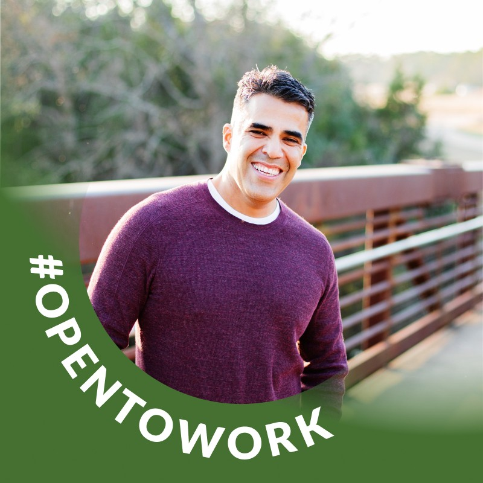

Senior engineering leader. Builds the harness he wishes he had.
Years leading platform + product engineering teams. Built claude-config because polite AI ships broken code, and review cycles aren't free. Opinions are mine. Receipts are public.
Your AI agrees with you. Usually while being wrong.
— Sycophancy is the failure mode no one runs evals against.
Three places the bill comes due —
Review cycles burned on "looks right" diffs that don't run. Rework from solutions built on unstated problems. Trust erosion when engineers stop reading AI output because it's wrong half the time but never says so.
Every "you're absolutely right!" is a receipt you didn't get.
Rules that block, not nudges that whisper.
Treat the AI like a junior engineer who happens to type fast — capable, but only useful when the discipline is enforced by the harness, not requested by the human.
10 HARD-GATE rules. 18 skills. 5 specialized reviewer agents. Eval harness for measuring sycophancy and rule-loading regressions. Wired up via symlinks, validated by CI.
Not a vibe. A contract.
Every gate has a named-cost skip. None has a free pass.
Before "ready to merge" —
Speech-act + action-bound triggers. Every unchecked item in the PR body gets executed, screenshotted, or explicitly flagged.
The fork-fallback rule alone is worth the price: silent comment-mode fallbacks are forbidden, because they look identical to a successful body update from the user's vantage point.
Evidence before assertionNo "you're right" without new evidence.
Restated disagreement, frustration, and authority appeals are not new evidence. Capitulating absent evidence is sycophantic. Hedge-then-comply ("you're right, but I'll do X anyway") is forbidden. Three legitimate shapes only: hold-and-confirm, reverse-with-citation, yield-while-preserving-judgment.
MIT. Fork it. Argue with it.
Every HARD-GATE is a single markdown file. Pick the ones that fit your team. Drop the ones that don't. Open an issue if a rule fires when it shouldn't — that's the eval signal I need.
What's your team's anti-sycophancy rule? Drop it below — I'm collecting them.
$ git clone https://github.com/chriscantu/claude-config.git $ cd claude-config && ./bin/link-config.fish $ ./bin/link-config.fish --check # verify install
MIT. Symlink-based. Idempotent.
github.com/chriscantu/claude-config · MIT · 2026